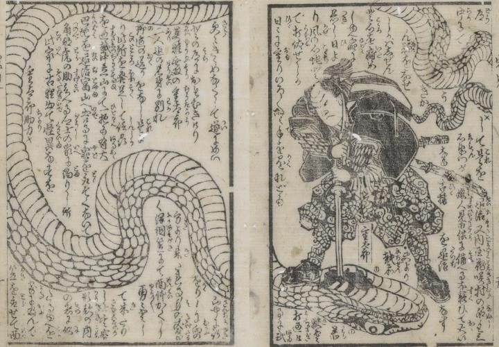

岩見重太郎が刀で大蛇を刺して退治している。
著作者：芳とら／出典：親書誌：U426_nichibunken_0384：岩見重太郎一代記 2巻；イワミ ジュウタロウ イチダイキ 2カン／日付：2014／資源識別子：U426_nichibunken_0384_0001_0000
Copyright (c)2010- International Research Center for Japanese Studies, Kyoto, Japan. All rights reserved.